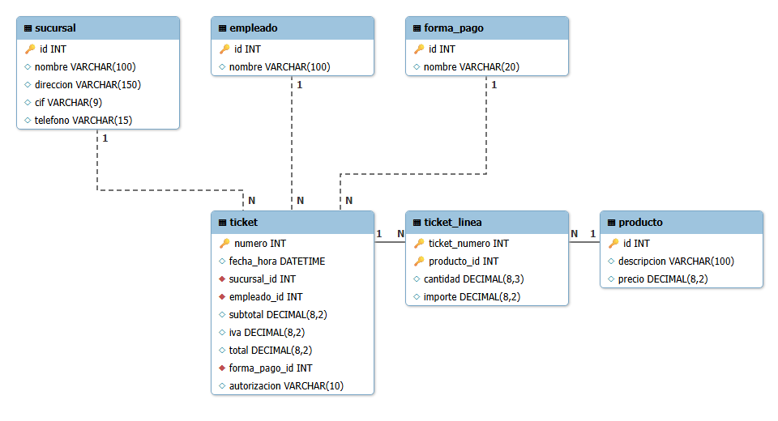
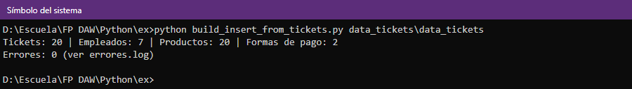
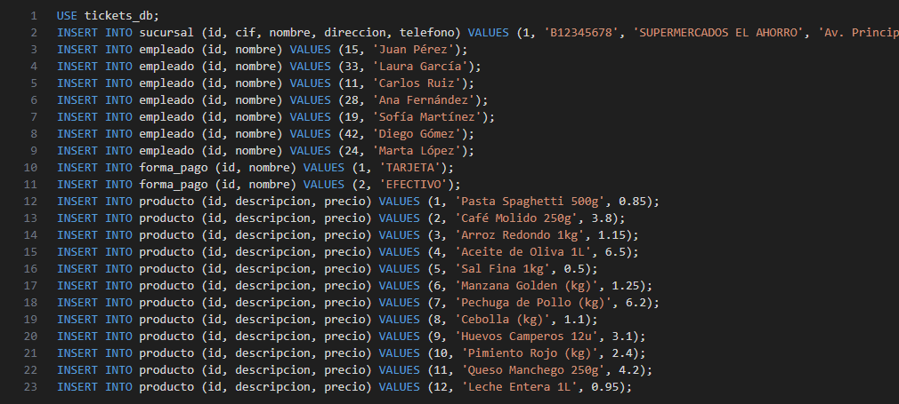

tickets_dbModelo de las 6 tablas con sus claves primarias (🔑) y foráneas (◆). ticket guarda la sucursal, el empleado y la forma de pago; ticket_linea une cada ticket con sus productos.

Comando: python build_insert_from_tickets.py data_tickets\data_tickets

insert_ticket.sql
build_insert_from_tickets.pyEl programa lee todos los .txt de la carpeta que recibe como argumento. Convierte cada ticket en un diccionario y genera insert_ticket.sql con los INSERT de las 6 tablas de tickets_db.
Cada función recibe una línea y el diccionario del ticket, excepto parsear_sucursal, que recibe todas las líneas. Solo actúa si la línea empieza por su etiqueta.
| Función | Línea que lee | Qué guarda |
|---|---|---|
parsear_sucursal | Las 3 primeras líneas | Nombre, dirección, CIF y teléfono |
parsear_numero | Ticket: | Número del ticket como entero |
parsear_cajero | Cajero: | Tupla (código, nombre) del empleado |
parsear_fecha | Fecha: | Fecha y hora como datetime |
parsear_pago | FORMA DE PAGO: y Autorización: | Forma de pago y código de autorización |
parsear_totales | SUBTOTAL, IVA, TOTAL | Los tres importes como float |
parsear_producto | Líneas que empiezan por espacio y número | Tupla (cantidad, descripción, importe) |
parsear_lineas llama a parsear_sucursal una vez. Después recorre todas las líneas y aplica las otras 6 funciones a cada una. Al final llama a validar_ticket.
setdefaultguardar_ticket guarda cada sucursal, empleado, forma de pago y producto en un diccionario. La clave es el CIF, el código del cajero, el nombre del pago o la descripción del producto.
setdefault(clave, valor) solo inserta el valor si la clave no existe. Si el mismo empleado aparece en 20 tickets, se guarda una sola vez. El id nuevo se calcula con len(diccionario) + 1, así los ids son consecutivos.
generar_sql recorre los diccionarios y escribe un INSERT por registro en insert_ticket.sql. El orden es sucursal, empleado, forma_pago, producto, ticket y ticket_linea, para que cada clave foránea ya exista al insertarse. La autorización se escribe como NULL cuando el ticket se paga en efectivo.
| Validación | Dónde | Error que lanza |
|---|---|---|
| Ticket repetido | guardar_ticket | ticket repetido |
| Campos obligatorios (número, cajero, fecha, forma de pago, subtotal, IVA, total) | validar_ticket | falta el campo X |
| Ticket con al menos un producto | validar_ticket | ticket sin productos |
| Subtotal + IVA = total (redondeado a 2 decimales) | validar_ticket | subtotal + IVA no coincide con el total |
| Suma de las líneas = subtotal | validar_ticket | la suma de productos no coincide con el subtotal |
| Fecha válida | parsear_fecha | strptime lanza ValueError si la fecha no existe |
| CIF de 9 caracteres | parsear_sucursal | CIF incorrecto: X |
| Número de ticket y código de cajero numéricos | parsear_numero, parsear_cajero | número de ticket incorrecto, código de cajero incorrecto |
| Cantidad e importe mayores que 0 | parsear_producto | cantidad o importe incorrecto |
Cada archivo se procesa dentro de un try. Si un ticket falla, el programa lo descarta, anota el error en errores.log y sigue con el siguiente. Al terminar imprime el resumen con el número de tickets, empleados, productos, formas de pago y errores.
errores.logCada error se guarda como un ErrorTicket con el número de ticket, la línea del fichero y el texto de esa línea. parsear_lineas lleva la cuenta de la línea que está leyendo. El número de ticket se busca antes de validar, así aparece aunque el error esté en la cabecera. Los errores que dependen del ticket entero (totales o ticket repetido) llevan - como línea. El log se reescribe en cada ejecución; si no hay errores contiene Sin errores.
Ejemplo con 5 tickets modificados a propósito (sin la columna de fecha y hora):
cajero_malo.txt | ticket 20010003 | línea 7 | ValueError | código de cajero incorrecto: 0X1 | Cajero: 0X1 - Carlos Ruiz cif_malo.txt | ticket 20010004 | línea 1-3 | ValueError | CIF incorrecto: B123 | cabecera de la sucursal fecha_mala.txt | ticket 20010002 | línea 6 | ValueError | day 31 must be in range 1..28 for month 2 in year 2025 | Fecha: 31/02/2025 Hora: 18:26 total_malo.txt | ticket 20010001 | línea - | ValueError | subtotal + IVA no coincide con el total | ticket completo zz_repetido.txt | ticket 20010001 | línea - | ValueError | ticket repetido | ticket completo